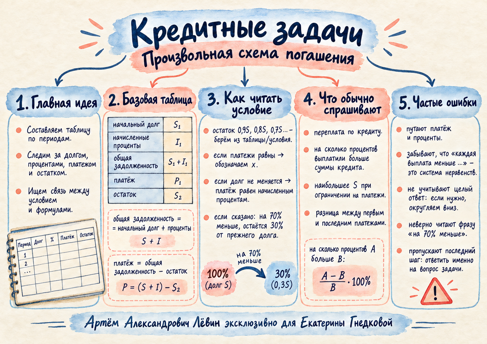

Алгоритм решения
1. Выпишите долг и ставку. 2. Укажите остатки после каждого платежа. 3. Найдите проценты и задолженность. 4. Вычислите платежи либо составьте уравнение. 5. Проверьте конечный остаток, ограничения и вопрос.
Занятие / 13 октября 2026
Как восстановить платежи по остаткам долга, рассчитать переплату и перевести словесные ограничения в систему неравенств.
Пусть S — выданная сумма, r — процентная ставка за период в долях единицы, Bi−1 — долг в начале периода, Pi — платёж, Bi — остаток после платежа.
Ii = r · Bi−1. Процент берётся с долга данного периода.
Di = Bi−1 + Ii = (1+r)Bi−1.
Pi = Di − Bi. Затем Bi становится долгом следующего периода.
Порядок операций в разобранных задачах один: начисление процентов → платёж → новый остаток. Для полного погашения последний остаток равен нулю.
Платёж одновременно покрывает начисленный процент и может уменьшать основной долг. Если после платежа долг не изменился, платёж равен только процентам.
В примере занятия кредит выдан на шесть месяцев. После первых пяти платежей остаток последовательно равен 90%, 80%, 70%, 60%, 50% суммы S. После шестого долг погашается полностью. В конце каждого периода начисляются проценты.
Измените ставку или сумму. Сверьте платежи с обновлённой таблицей и суммарной переплатой.
| Период | Долг до % | Начислено | Задолженность | Платёж | Остаток |
|---|---|---|---|---|---|
| Общая сумма выплат | 0 | ||||
Размер платежей по периодам
При S = 1 млн руб., ставке 5% и исходном графике сумма начисленных процентов равна 0,225S, переплата — 22,5%. Сумма всех платежей равна 1,225S.
Когда кредит погашен полностью, общая сумма выплат превышает сумму кредита ровно на начисленные проценты (при отсутствии других комиссий). Это даёт два равноправных способа найти переплату.
Чтобы определить, на сколько процентов общая сумма выплат больше суммы кредита, разделите переплату на первоначальную сумму S и умножьте на 100%.
В знаменателе находится величина, с которой сравнивают: если спрашивают «на сколько процентов A больше B», используйте (A − B) / B · 100%.
Кредит S миллионов рублей оформлен на три года под 20% годовых. После платежей остаётся 0,8S, затем 0,4S, затем ноль. Последовательно получаем платежи:
Условие «каждая выплата строго меньше 5 млн руб.» даёт три одновременных неравенства.
Самое жёсткое ограничение: S < 5 / 0,56 ≈ 8,93. При условии, что S — положительное целое число миллионов рублей, наибольшее S = 8.
Если S допускает любые действительные значения, у открытого промежутка S < 5/0,56 нет наибольшего значения. Если требуется целое S, проверьте ближайшее допустимое целое число. Также различайте «каждый платёж меньше» и «сумма платежей меньше».
В примере занятия кредит S = 3,3 млн руб. выдан на пять лет под 20% годовых. После первых трёх платежей долг сохраняется. Значит, каждый из этих платежей равен 0,2S = 0,66 млн руб.
Последние два платежа равны. Обозначим их X. Введём k = 1,2.
После начисления процентов и платежа X остаток B4 = kS − X.
После процентов и ещё одного платежа X: B5 = k(kS − X) − X.
Приравниваем B5 к нулю и решаем уравнение относительно X.
Последний платёж больше первого на 2,16 − 0,66 = 1,50 млн руб.
Равные платежи в четвёртом и пятом годах удобно обозначить одной буквой X. Первые три года образуют иной этап: выплачиваются только проценты.
1. Выпишите долг и ставку. 2. Укажите остатки после каждого платежа. 3. Найдите проценты и задолженность. 4. Вычислите платежи либо составьте уравнение. 5. Проверьте конечный остаток, ограничения и вопрос.
Если долг должен стать на 70% меньше прежнего, новый остаток равен 0,3 прежнего долга. Это отличается от формулировки «равен 70% прежнего долга».
Сложность возрастает постепенно. В каждом задании проценты начисляются перед очередным платежом; все денежные величины и единицы измерения указаны в условии.
В начале месяца долг составлял 200 000 руб. За месяц он вырос на 5%. После платежа осталось 180 000 руб. Найдите платёж.
В начале года долг составлял 400 000 руб. Банк начислил 10%, затем заёмщик заплатил 170 000 руб. Каков остаток?
Кредит 1 млн руб. выдан на три года под 20% годовых. После платежей остатки составляют 0,7S; 0,4S; 0. Найдите три платежа в миллионах рублей.
Кредит S выдан на три месяца под 4% в месяц. Остатки после платежей: 0,75S; 0,25S; 0. На сколько процентов сумма платежей больше суммы кредита?
В начале года долг составлял 800 000 руб. За год начислили 15%. После платежа долг стал на 30% меньше суммы в начале года. Найдите платёж.
Кредит S млн руб. выдан на три года под 20% годовых. Остатки: 0,8S; 0,4S; 0. Каждый платёж строго меньше 5 млн руб. Найдите наибольшее положительное целое S.
Кредит S млн руб. выдан на три года под 10% годовых. Остатки: 0,6S; 0,3S; 0. Общая сумма платежей строго меньше 15 млн руб. Найдите наибольшее положительное целое S.
Кредит 2,2 млн руб. выдан на четыре года под 20% годовых. Первые два платежа сохраняют тело кредита. Третий и четвёртый платежи одинаковы; долг полностью погашен. На сколько млн руб. последний платёж больше первого?
Кредит S выдан на два года под 25% годовых. После первого платежа осталось 0,6S, после второго — 0. Сумма двух платежей равна 7 млн руб. Найдите S.
Кредит S выдан на три года под 20% годовых. Остаток первого года на 70% меньше исходного долга, остаток второго года — на 70% меньше первого, после третьего долг погашен. На сколько процентов сумма платежей больше первоначального кредита?
После занятия я могу:
Краткое повторение: пять этапов таблицы, смысл словесных условий, переплата и типичные ошибки.
